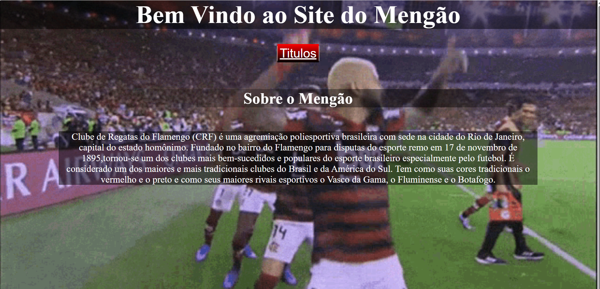
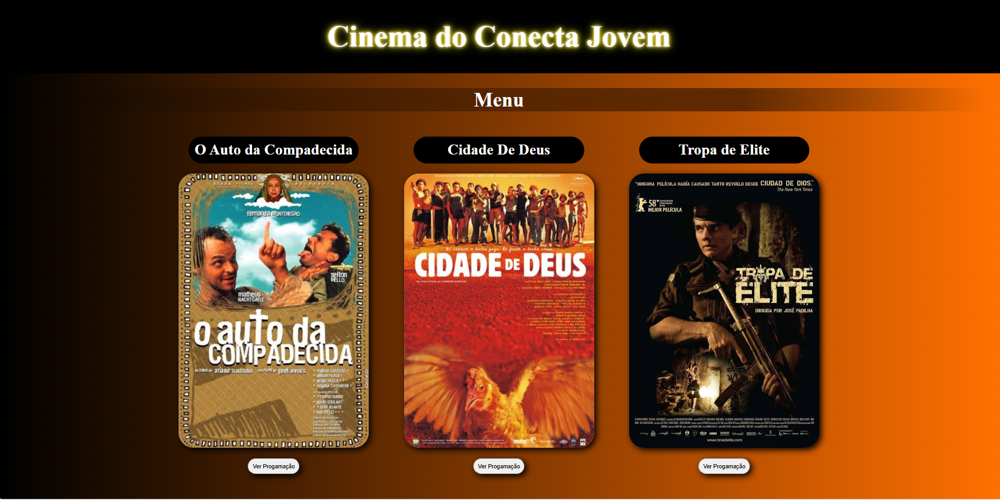

Olá! Meu nome é Ruan Fabricio, tenho 21 anos e sou estudante de Análise e Desenvolvimento de Sistemas pela Univest, atualmente no 4º semestre.
Tenho interesse pela área de tecnologia e desenvolvimento de software, buscando constantemente aprimorar meus conhecimentos e colocar em prática o
que venho aprendendo durante minha formação.
Sou uma pessoa dedicada, curiosa e comprometida com meu desenvolvimento profissional.
Tenho como objetivo adquirir experiência na área de tecnologia, desenvolver projetos e continuar evoluindo como profissional de desenvolvimento de sistemas.
Gosto de jogar jogos online como Valorant ,GTA5 online e Free Fire , e tambem gosto de praticar esportes , como Academia.

